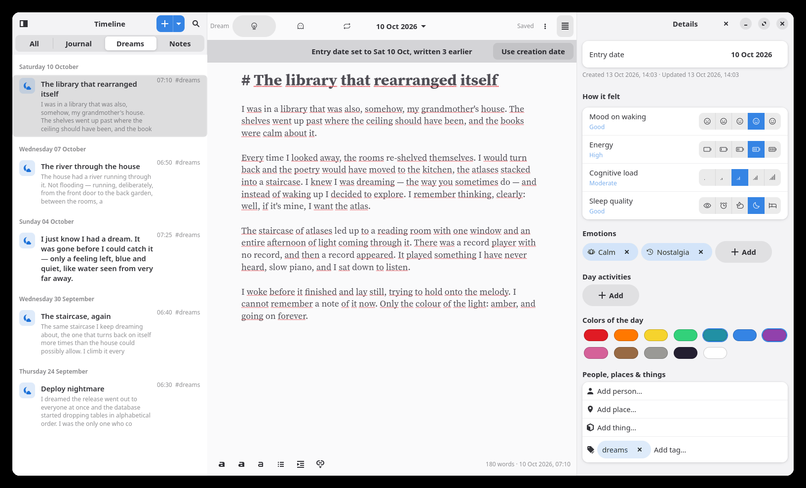
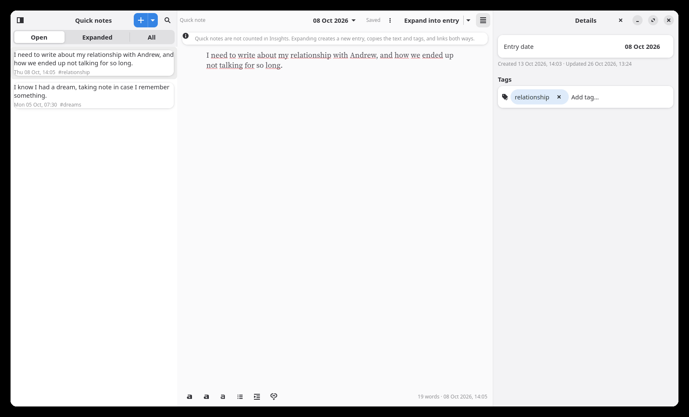
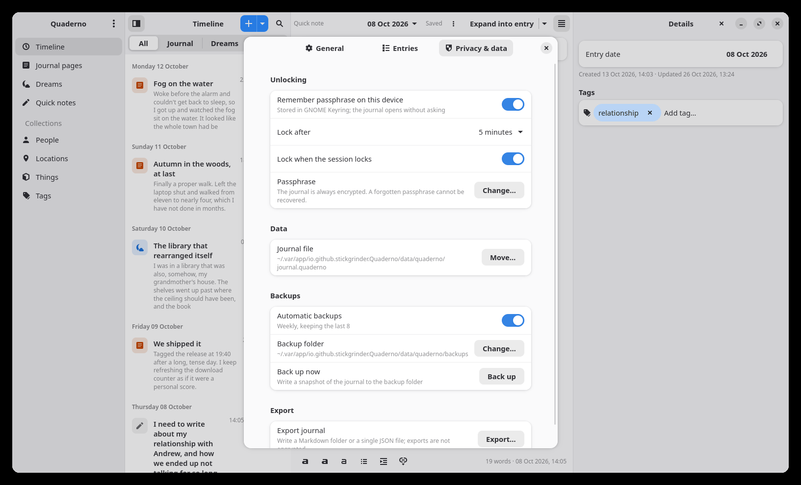

A secure, private personal journal for GNOME.
Quaderno keeps your most personal thoughts, diary pages and dreams in one encrypted file on your computer.
It is private by design: no account, no server, no network. Your writing stays yours, protected by a single master password. The file format is fully documented and built on open foundations (SQLite and SQLCipher), so there is no lock-in, and anyone can build a compatible client. That password is the only key.
Quaderno is for people who want their life to be nobody else's business.
Screenshots




Get Quaderno
Version 0.1.0 Free software under GPL-3.0-or-later
Flatpak, Debian, Ubuntu, Fedora and tarball.
Download Quaderno